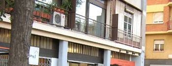

|
L'home que hi vivia, en règim de lloguer, no va permetre mai que
l'Institut
Català del Sol (Incasòl) de la Generalitat, la propietària de la Casa Bloc, actualitzés
la façana tronada.
|
|
Si caminen pel passeig
Torras i Bages i s'aturen a la cantonada del carrer Almirall Pròixida, els sobtarà
descobrir que, de tots els habitatges de la Casa Bloc, l'edifici modern en forma
de ziga-zaga que va construir la Generalitat republicana per als obrers, n'hi
ha un, entre el total de 169, de molt diferent: és com l'aneguet lleig de la Casa
Bloc perquè és l'únic que no té la façana rehabilitada. L'home que hi vivia, en
règim de lloguer, no va permetre mai que l'Institut Català del Sol (Incasòl) de
la Generalitat, la propietària de la Casa Bloc, actualitzés la façana tronada.
L'inquilí
d'aquell pis va morir fa poc i l'Incasòl i l'Institut de Cultura de l'Ajuntament
de Barcelona tenen un projecte que transformarà l'aneguet lleig de la Casa Bloc
en el cigne més cobejat. Al llarg d'aquest any, sotmetran l'habitatge a un projecte
de museïtzació a través del qual es recuperarà la essència original d'aquest habitatge.
A
partir de la documentació del Gatcpac (Grup d'Arquitectes i Tècnics Catalans per
al Progrés de l'Arquitectura Contemporània), l'habitatge retrocedirà setanta anys
i tornarà a lluir el terra, els llums, el paper de les parets... i, fins i tot,
el mobiliari (que tot i que se'n conserven els dissenys, no es va fabricar mai)
que haurien d'haver estrenat els obrers i que, amb l'esclat de la Guerra Civil,
van acabar fent ús a les vídues i els orfes de militars.
| | El
pis és, com tots els de la Casa Bloc, de tipus dúplex, amb un superfície de 55
m² (n'hi ha de més grans, de 77 m²). L'Incasol i l'Icub (que ha encarregat el
projecte museològic al Disseny Hub Barcelona) preveuen que a final d'any el públic
podrà visitar aquest habitatge. Les visites s'hauran de concertar i seran guiades.
 |